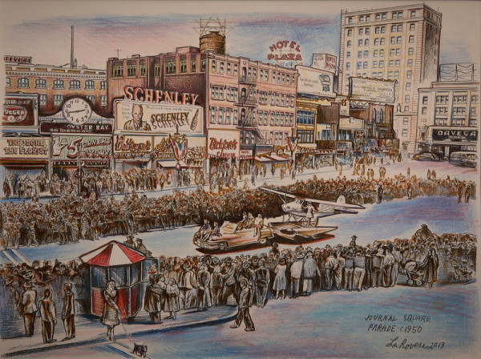

Prose
Kings

Willets swarm off my left in strange formation; a dark scythe that drifts against a diming sky. They cruise low over the marsh, flat as shadows, streaming towards the water's edge where crabs await certain fate on the shoreline. The falciform fades and I understand that these birds are oblivious to me and to the drone of cars on this road and I think that this is because they were born to this world—the world where this road and this road's noise have always existed. And when they die, they'll die in a place where this road continues to exist even though it is not alive and that is a peculiar thought to ponder; how things that are not alive or never were alive get to live on, so to speak.
A lot of willets die here. They die other places too, sure, but the western willets, the eastern willets…they both die here. It is a phenomenon they have in common. My mother wanted some of them to live forever and so we had photographs of willets in sleek picture frames displayed around our home. Willets on one leg. Willets feeding in the saltmarsh. Willets on the shore flaunting their racing stripes. Little balls of willet fluff fresh from the egg. Willets on the horizon racing against time. When I was a child we would sit on the dunes on an always plush, oversized beach towel and willet watch. She had these tiny, powerful, seafoam green binoculars and that is how I always remember her: cozy-curled on the dunes with binoculars strung around her neck off a black strap; a handwoven sun hat her crown.
She would always look like she had hit the lottery when she lowered those binoculars away from her sparkling eyes. One time she had asked me if I understood just how special this place was to the willets; the western and the eastern as two sides of the same coin. The eastern willet would take up residence during the summer and the western willet would arrive in the winter when the eastern willet would migrate to South America. They loved this place so much they treated it as a time-share. These two types of willets only have two things in common, she had said. One is that they love the Jersey shore, and the other is that they both die here.
I glance out at very much alive willets among the clay-colored tips of salt reed grass that splotch the marsh on either side of route 30. The grasses are irradiated by the setting sun crashing behind me and I sigh at these Elysian fields of gold that surround me. I do my best to overlook this otherworldly omen, click my tongue and cut straight through this fortune, trying hard to hold the caddy under 65. Trying. This stretch of highway between Absecon and Atlantic City is dry and felt-smooth despite the long fatigue cracks derived from coastal weathering. The road begs for speed but I just squeeze the wheel instead; narrow my focus. This is where A.C. begins to rise out of marshland; monoliths in vibrant color that call out to me like birdsong off the dunes.
My headlights are eager to catch the reflectors fanned out before me; diamonds on the asphaltic. It's barely dark enough for them to dazzle back, but the road is dying to shine. I am unsurprised by the way it reminds me of how slots will flare and gleam once the odds are beaten into submission by a relentless blue-hair that finally takes down a big score.
I eye the dash and ease off the pedal to glide before gazing back out over the expanse of the marshland. More willets. I've always wondered if these birds really want to die here. Nothing wants to die, I think, whether that is here or anywhere else. I don't know. But a lot of willets do die here. Maybe the Atlantic draws them, their final resting place calling out to them in a voice that will be obeyed when it's their time. I imagine that more than a few of them hold out for death until they are relieved by a sublime calmness when they see this place for the last time, smell it for the last time as they illapse over the Delaware River, so close that they can taste it—so close that they can't prevent their lungs from filling with it. I wonder what death tastes like. Maybe that's not it at all. Maybe it's just one last chance to taste life. Yes. Maybe the only time you feel alive is when you're about to die because that's when you finally realize that it's now too late.
The motor in the door wheezes as the driver-side window lowers. Briny air rushes in, cools my face; reminds me that I'm still alive. It washes me, tousles my hair, and knocks against my head as if trying to knock sense into me. I mutter to myself. "I am alive, I am still alive." I try to ignore the willets and think of how tonight will go. I don't have a room. I don't have a real plan. Caesars routinely comps me with the explicit understanding that I push around handfuls of heavy chips. It wouldn't surprise me if they started getting a room ready for me before I even sit down. What came first, the chips or the comp? The willet or the egg? Life or death? Can you have one without the other? I'm not sure it matters.
The road curves just enough for the sun to catch my eyes in the rearview mirror; a raging ball of ferriferous fury that refuses to go down without a fight. She's the only one behind me and in an awful hurry to leave this place. My ex-wife didn't like A.C. either. I twist my rearview mirror so that the sun's dying grace isn't blinding me and when I do that, the terrain changes into something aposematic.
A violet shade draws around me, priming me for the radiance of the casinos that sparkle high above the end of the line. There was some sort of purple lining running along the inside of John's wedding ring. He would sit at the blackjack table and perpetually fidget with it, flipping the ring over the backs of his fingers like a poker chip. He said his wife liked purple. Good enough reason. I never met her. There is this notion I have, that you can't really know anyone all that well. I knew bits and pieces about John. Son of an ironworker. Father of four. Lived in Barnegat his entire life. He got a pork roll, egg, and cheese every morning from Danny's. Could split eights with the best of them. I knew enough to decide we could be friendly, but I'm not sure I could call him a friend. I wouldn't have called him at 3 AM in a bind. Although, that sounds more like something you'd do to your enemy rather than your friend. As A.C. looms ever larger, I wonder if I can call anyone a true friend.
I have all these people in my life. Some call. Some write. Family here. Family there. I'm the only one out of all those people who really knows who I am. A world full of people and I'm the only one. Billions. I'm the only one. I get the sense that, in some way, that's what John was really telling all of us. He was ultimately saying, you don't know me. Because if you did, then you wouldn't be all that surprised. I won't speak for the fellas, but I will say that he was half right. I didn't know him. But I wasn't all that surprised either.
I let the car slow itself as route 30 winds down. Coming off 30 always takes me directly to being 11 years old again, do not pass go, do not collect 200 dollars. I'm rolling dice and looking to buy properties as I turn onto Virginia Avenue, then make a left on Atlantic. I used to love Monopoly. When I was younger my family would play the game for hours, before my pops started enjoying the bottle more than us. I had always imagined what a magical place A.C. must have been. When you are a child, coming to understand that the game was based on a real place makes you think that it must be for special reasons. I pass all the familiar streets, not one of them living up to promise as my tires hit reality; the potholes that should tell you everything about an obolary place where money supposedly flows like wine. These streets, all gone to shit now. I smirk at that thought, because A.C. went to shit the very day they thought it was a good idea to build casinos. The unkept little parking lot with weeds and empty beer cans on Indiana that I always use is empty this Monday evening. I step out and it isn't long before salt lightly flavors my lips.
I need coffee before I meet the fellas on the boardwalk. We decided that somewhere in between Caesars and the Trop would be fitting. I'm not sure how long we're gonna spend doing this thing and I'm not even sure what anyone is going to say. I agreed when Sean said we should do something for John. I said yes, we should, but that was where I left it. I'm not going to say anything because saying things out loud about a dead person is a chronic waste of breath. I should know; it's exhausting to say niceties about the people who refuse to outlive you.
When my pops died, I had to stand up in front of a room of people I knew very well and sling a panegyric for a bastard of a man. My pops was a mean son of a bitch with a drinking problem and anger issues and, I can't be certain, but I think he enjoyed hitting his kids. I know he enjoyed hitting his wife. Can you really tell a room full of mourners that? I came damn close. I almost thanked him for making me the best alcoholic gambling fuck-up this side of the Mississippi River Queen. I should have. I should have said it out loud in a hushed setting so everyone could hear the pin drop. That's the thing with the truth though. No one wants to hear it. If there's any justice on this side of the living, when the reaper pulls my card, someone will get up and say nice words about me and a room full of people I wronged will nod their heads and that will be that. Or not. I'll be dead. I doubt that I'll care much what happens then.
I stop in a ramshackle convenience store flooded with buzzing tubes of fluorescent light, guarded by the lazy eye of a fat calico. I ask for a deck of cards and a black coffee. The pimpled-cheek kid behind the scratched plexiglass can't be more than sixteen and pushes the coffee forward with a tilt of the head, giving me an unsure look, trying to decide whether or not to give me the coffee on the house. I think he thinks I'm a detective. I really do blame generational decay for that. It's a simple sport coat. White button down. Black slacks. I catch myself on the grainy closed-circuit television set and I see how my barrel chest and combed hair gave this kid an impression. I pay him all the same, itch the cat behind the ear and leave the change; a tip for the compliment. No one dresses right anymore. There was a time when you wouldn't think about leaving the house without looking sharp, let alone stroll onto the floor. It used to be a way of saying "I'm a serious person ready to take this seriously," but now, now clothes don't matter. Today's modern gambler dresses like a slob and you never know, they might be a millionaire; throwing money around in flip-flops and cargo shorts like a real asshole. I curse on the curb because the stale coffee is too hot.
Being a millionaire isn't any better than not being a millionaire. Your bank account is arbitrary. Money does not change who you really are. Deep down in my heart I am the same guy with money as without. It just does a predictable thing to your personality, like what an upper or a downer does to your brain. Somehow, it affects you by making you more or less you. With money, you become unrestrained because financial burden isn't holding anything back. A lot of money bestows a big personality, but that swings the other way, too. Having too little money makes it so that you have to keep a low profile; you're heavy, held down by what not having money can't take away. But you are still you. In the end though, it really doesn't matter. You can't take it with you. If you die with money in your bank account, you did it wrong. John did it right. He went out without a penny to his name.
John took the royal route—he went suicide king on us. The old knife to the head, but he didn't use a knife. When the cards don't go your way or you find yourself out of position, you lose. It's that simple. Maybe it's your fault, maybe it's not. But you will lose everything and that's just the hand you have been dealt. Sometimes people handle it better than others, but sometimes there's only one way to deal with it. You take all those winnings you don't have and you use them to buy the farm.
John's wife got jack shit, too. The car got repossessed. The house belonged to the casino. At least he blew his own face off. Closed-casket funerals are cheaper because you don't have to pay someone to make you look alive. She and the kids didn't see it coming. I did. I had a cup of coffee with him the week before. We were sitting on a bench near Caesars lobbing pieces of sub bread to the gulls to catch in the sky above the boardwalk and he was talking about how he needed to land one. "Just one," he had said, while looking up at the pinwheeling gulls. That's a dead giveaway. When it comes down to one, just one, that's when you know. He had nothing left. The sad sack really thought he was going to pull himself out. But when your hole gets that deep, you're not pulling yourself out, you're pulling everything down around you until you're good and buried in a plot of your own damnification. That's why my wife left. I do not doubt it. She began to see a future where the walls close in and everything gets taken away.
When you frequent the casino, you will have good days and bad days. My ex-wife obviously loved the good days. Who doesn't love coming home with a hundred thousand dollars that you didn't have when you left? There is such promise. There is euphoria. There is the immediate evaporation of pecuniary worry. The day after, when you wake up, it's as if you lassoed easy street and yanked it within reach. My wife was the type of woman who set goals and stuck to the rut of what it took to accomplish them. She liked taking money and putting it away. She had a 401k. An IRA of some sort. Savings account. I never understood. I still don't understand. What good is money you don't use? You need money to make money and there is no better place to make money than at a casino. You take some money and you double it. My way of making money turn into more money was not a surprise to Sharon. I think the surprise to Sharon was that she ever put up with it in the first place.
I step up onto the boardwalk and a shore breeze claps me, refreshes me. I can see the fellas in their sport coats, milling around a bench, passing around a flask. Sean waves at me and I tip my coffee cup towards him as I weave through the scattered foot traffic. I turn down a nip but shake everyone's hand. The four of us just stand and shoot the shit under light from the pole next to us.
Little black flecks flit in and out of our yellow cone; night bugs that might not even know we can see them—drawn to this light on this boardwalk on this beach right now. Maybe they know that they'll want to be here when this light gets going, maybe they don't. I don't know. These bugs are harmless for what it's worth but Sean flaps his hand in the air around his head. I can see plainly that not one bug has touched him, but he's making a production out of it and talking about how he's pretty sure the mechanic he takes his jeep to moonlights as a bookie for the mob but he isn't sure how to bring that up. I stare into my cup and can't help but think about what a bad idea using a bookie is, let alone flirting with the mob. Sean might be the next to go.
I sip my coffee and look out at the beach. These windswept dunes flash me back to a permanent place where money and death were meaningless concepts born of games and leisure. There is a lone blanket with two people laying on it, staring up at the sky in a timeless pose, under the obsidian clouds of nightfall. Strips of gray-blue sky slash the pall open, enough to make me wish that none of the clouds were here because then the day could stay alive a moment or two longer. I close my eyes. It happens quick here. Then it all goes dark.
I open my eyes and look at the fellas standing around me and find myself coming back to the fact that I really don't know any of them. I don't know where they grew up. Who they grew up with. What family raised them. Sometimes I wonder if their current families even know they like to spin the wheel, if their families know that these men think they know what they're doing with the money that may or may not even be theirs. I wonder if anyone ever really knows what they're doing. But these guys, I mean, we're not really friends. I don't think I know their last names. I'd have to think about it long and hard and even then, I'd just be wasting my time because I'm not really interested in that stuff. If a guy wants to get all weepy about his family you know he's not gonna be around long. You can't show up to A.C. with tears in your eyes. You want to cry on your way out of town, go for it. A lot of people cry after losing big. But tears won't wash the loser off of you. Maybe it'll help you if you get yanked by a statie on the parkway, but even then, good luck. If a statie puts in the effort of coming out of their little hiding spot to chase your ass down, that's just the way you've been busted. I imagine seeing a grown-ass man crying his eyes out, his face puffy and eyelashes wet, might make a statie think twice about handing out a speeding ticket, but that's a sad man's gamble. I don't know too many sad men that come out on top.
You need a stiff upper lip to put it on the line. Mustache of steel; believe that you know what you're doing or at least look like you know what you're doing. Especially blackjack. Sure, you can go solo, but the odds actually improve with every other player…so long as they can split, hold, or hit with confidence. It becomes less of a game and more of a philosophy, and philosophy demands rigor.
I'm planning on nothing but a long night of blackjack; it was John's favorite game. There's a dealer at Caesars who had always been sweet on John. She'd always try to help him out. Giving him these subdued nods of the head or sly taps on the felt with her finger when she thought only he could see it. It was a nice gesture, but I wasn't blind and he knew how to play; yet always made sure to tip her when he came out on top. One or two chips here or there isn't going to crater a player out. If it does, they made some bigger mistakes than tipping the dealer. I suck in my lip and realize that I'm gonna be the one to break the news to her tonight.
I know there isn't anything you can really say, but saying something to someone who cared is better than saying nothing at all to them. This gives me pause because tonight I'm going to go out of my way to give my condolences to a random dealer in A.C. when I didn't bother to speak to his wife. I mean, none of us did. None of us went to the funeral. We weren't invited because his family didn't know us and that seems like a terrible time to go and introduce yourself. "Hi, I'm John's gambling buddy. Sorry for your loss."
I sit down on the edge of the worn bench and take my dress shoes and socks off. I roll up my slacks. George ribs me over how my calves and feet are whiter than my cup. I take it on the chin because I can. But I smirk when they all start taking off their shoes and socks, their calves and feet just as pale as mine. I finish my coffee and fling the Styrofoam cup into a trash bin before we head off the boardwalk and onto the cool sand. We head towards the waves that are heading towards us.
We stand at the threshold of the Atlantic where reticence is overwhelmed by the waves that keep rolling in, that keep pounding sand, and in between the continual crashing you can hear faint voices from the boardwalk if you listen for them, but in this cycle of living they're easily drowned out by the siren song that the ocean sings. I pull out the deck and hold it up for everyone to see before I tear off the cellophane and stuff it deep into the back pocket of my slacks, not wanting to litter. I run my thumb down the edge, quickly riffling them under my nose. The scent of a fresh deck is the smell of hope. Every new deck is a new dawn. That is because the deck hasn't been tainted by loss yet. It's why you don't jump on a blackjack table mid-shoe. I don't, anyway. I fan the cards in one motion and hold them out so that the fellas can grab the kings. I can't help but take notice that the only king left for me is the king of hearts. I collapse the deck and jam it into my front pocket where my cell phone is, making it as uncomfortable as possible so I have zero chance of forgetting to get rid of it before walking on the floor.
The four of us stand there, each a ruler in his own right. After a moment of silence, we throw the kings at the water, sailing the cards against the surf and saying nice things like, "he was a good man" and "he deserved better." Mine is the last card to be swallowed by the ocean and I say "salut, John."
There is a befitting reassurance in the cracked, empty crab shells that litter the water's edge; willet calling cards. They lay just out of reach of the tide's grasp but not the spray, not the droplets of sea that are sprinkled over their husks like holy water with each wave that slaps the shore in an act of mersion. Some shells are larger than others, more whole than others, all of them in their reserved deathplace just the same.
We smoke stale cigarettes from a pack of Camels Sean had found in John's car, even though none of us smoke anymore. The beach, always dappled in tiny pebbles that glisten when wet, sparkle wave after wave. We are silent as the soundtrack of John's death plays. It plays here for us the way it has played for the western willet and the eastern willet in the time before route 30. The tune has always been the same. It's the sound of liquid slamming into solid after pushing through gas. I stand here, at an oceanic altar where three states of matter converge in cacophony and I am forced to wonder if that's all this is, alone in my own deism.
I look out at the blue crease where the Atlantic levels the sky and I think about what had to have been rolling through John's mind when he was lured to the shoreline like so many willets, and jammed that gun into his face. Did he have second thoughts? There is a chance that he was exhausted from life's journey and without any hesitation said to himself "this is it, I made it." Maybe his only thought was about death because by then it's too late to think about anything else other than dying.
I think there are a lot of similarities between John and the waves that are rushing in, more than prepared to obliterate themselves on grains of sand. I wonder if a wave was the last thing John saw, standing at the edge, with his finger on the trigger. Maybe he closed his eyes and the last thing he felt was a whooshing of air from countless flapping wings on their final approach. I wonder if John stood here and felt like a willet that held out on death for one more chance to taste life. I wonder if John felt alive.
Anthony Joseph Morrone is the author of the novel Kill the Balloons, which was published in 2014. Originally from New Jersey, he now lives in New York with his wife and two daughters.